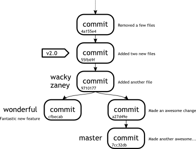
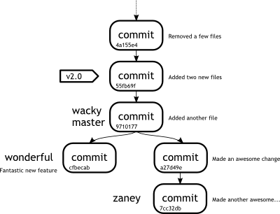

Week 4Day 3 - "Tricking the twigs"
More neat ways to work with branches
This is only the beginning of the fantastic feature set that Git offers.
By knowing how Git handles your data, you can make it work for you.
Let us take a look at another situation you may find yourself in.
In the trenches...
"Rob!" shouted Simon for the fourth time that morning.
"Rob, I made a real boo boo this time."
Rob walked over to Simon again, head lolling back on his shoulders and his eyes rolling.
His arms weighed heavily by his side and his walk reminded Simon of that of a zombie.
"What have you done THIS time?" asked the developer as he reached the desk.
Simon drew in his breath deeply, "Well, I created a branch, started working away, committing like a good'un, but I only just realised I'm on the wrong branch. I forgot to switch."
He hung his head in shame.
"I'm screwed right?"
"Not necessarily," replied his colleague.
This wouldn't work in all situations, but then there are other techniques described later in the book to deal with more special cases.
In this scenario we have created a branch, forgotten to switch into it, and carried on committing as if we were in our new branch.
At first glance it may seem as if we are stuck.
Once we have committed, we can't undo those commits right? Well, that's not entirely accurate.
We actually have two ways of clearing up this particular situation.
The first of these is to use git revert to undo the changes of each commit.
Whilst this will work, we have two problems, a) we do not know how to use the git revert tool yet, and b) we can actually handle this situation much more cleanly.
We are going to make a new branch, make a few commits and then look at a diagram of our recent work to see how we can work things out.
john@satsuki:~/coderepo$ git checkout master
Already on 'master'
john@satsuki:~/coderepo$ git branch zaney
john@satsuki:~/coderepo$ echo "and some awesome changes" >> newfile1
john@satsuki:~/coderepo$ git commit -a -m 'Made an awesome change'
[master a27d49e] Made an awesome change
1 files changed, 1 insertions(+), 0 deletions(-)
john@satsuki:~/coderepo$ echo "and some more awesome changes" >>
newfile2
john@satsuki:~/coderepo$ git commit -a -m 'Made another awesome change'
[master 7cc32db] Made another awesome change
1 files changed, 1 insertions(+), 0 deletions(-)
john@satsuki:~/coderepo$
|  |
|
Figure 3
Repository including the mistake |
|
|  |
|
Figure 4
Repository showing how things should look |
|
Figure 3 shows how our repository looks now, whereas Figure 4 shows how the repository should have looked if we had performed it properly.
You should notice that the positions of master and zaney have switched places.
How can we rectify this?
We already discussed one method using git revert, which we are due to cover a little later.
However, because of the way that the history has been written, we can do something very simple.
We are going do the following the following steps.
- Switch to our zaney branch
- Fast-forward our zaney branch so that it points to the same commit using a merge
- Switch back to our master branch
- Reset our master branch back to the required point in time
So let us take a look at the command line output and see how we achieve this.
Hopefully you should be familiar with most of the commands.
john@satsuki:~/coderepo$ git checkout zaney
Switched to branch 'zaney'
john@satsuki:~/coderepo$ git merge master
Updating 9710177..7cc32db
Fast-forward
newfile1 | 1 +
newfile2 | 1 +
2 files changed, 2 insertions(+), 0 deletions(-)
john@satsuki:~/coderepo$ git checkout master
Switched to branch 'master'
john@satsuki:~/coderepo$
Now we reach step 4 in our set of instructions.
The one function we do not know how to perform yet is the resetting of our branch back to a previous point in time.
The point we need to rewind back to is the point that we initially created the zaney branch at.
We could have gotten this information by using git log.
Instead, this time we can use the information presented in the merge output to show the common ancestor, which has to be the point that we created our branch at.
In this case it is commit 9710177.
We are now going to perform the last step using an old friend called git reset.
You may be thinking that git reset is only used to reset files in the index, but in fact, git reset can actually perform many more tasks.
We are going to use it with the --hard option.
This option can be dangerous, as it will discard all modifications in the working tree, so use with caution.
If we had uncommitted changes in our repository at this point, we could not have used this option.
Let's use the command and see where we get.
john@satsuki:~/coderepo$ git reset --hard 9710177
HEAD is now at 9710177 Added another file
john@satsuki:~/coderepo$
As you can see, we are told that the HEAD of our master branch is now at commit 9710177.
We have successfully rewound our master branch to a previous state.
The --hard parameter reset the index and the working tree to be at the state of the commit we tell it to.
It disregards all working copy and staged modifications, so use it with care.
The git reset command does not only work for rewinding back in time.
It can also be used to move a branch forward in time.
As an example of this, we used a fast-forward merge to move our zaney branch forward to be in-line with master.
We could just have easily used git reset --hard 7cc32db from within the zaney branch, to bring it to the same point as the master.
In fact, though it looks scary, we could also have used git reset --hard master to reset the zaney branch to be at the same point as master.
Saves typing out those horrid commits does it not?
Finally we are going to introduce one more use of the git log command to show us how our repository looks in a semi-graphical way.
john@satsuki:~/coderepo$ git log --graph --pretty=oneline --all --abbrev-commit --decorate
* 7cc32db (zaney) Made another awesome change
* a27d49e Made an awesome change
| * cfbecab (wonderful) Fantastic new feature
|/
* 9710177 (HEAD, wacky, master) Added another file
* 55fb69f (v2.0) Added two new files
* 4a155e4 Removed a few files
* a022d4d (tag: v1.0b, v1.0a) Messed with a few files
* 9938a0c Finished adding initial files
* 163f061 (v0.9) Made a few changes to first and second files
* cfe23cb My First Ever Commit
john@satsuki:~/coderepo$
The --graph parameter, tells Git to draw a graph down the left hand column.
The --pretty=oneline parameter reduces the commit details to one line, else we see the entire log message of the commit.
--all shows all branches.
The abbrev-commit in the command tells Git to abbreviate the commit IDs to a sensible length.
Finally, --decorate shows us the tag and branch references.
Hopefully if you compare this tree to the diagram earlier, you will see that the tree is actually completely in order.
Be aware that during this work we have changed the history of at least one of our branches.
Had we pushed our changes to a public server, which is something that will be discussed next week, we would have to force these changes to be accepted at the server end.
Git knows we are trying to change a past that may have been viewed by others and will warn us accordingly.
|
|